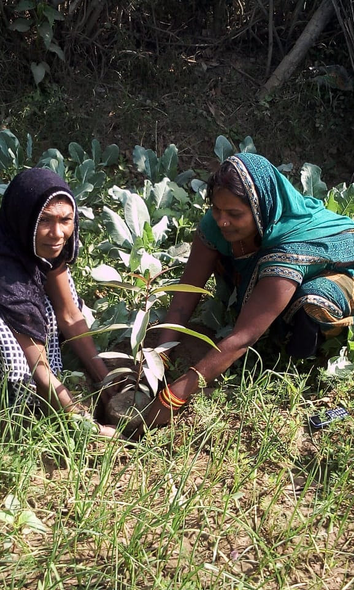

JANANI FOREST AND ANIMALS
WELFARE TRUST
(Janani World Foundation)
"प्रकृति बचाओ अस्तित्व बचाओ"
With over 40,000 species currently facing the immediate threat of extinction due to human expansion and habitat loss, our planet is experiencing an unprecedented biodiversity crisis. Yet, it is these very animals, birds, and insects that act as the true caretakers of our ecosystem—quietly building and maintaining the fragile balance that sustains all human life. They are the true architects of nature. Our existence is inextricably linked to theirs: if they fade away, humanity will inevitably follow. Protecting wildlife is no longer just a charitable choice; it is our ultimate act of self-preservation.

Ped Lagao Desh Bachao
(Plant a Tree and Save Country)
We drive environmental change by partnering with local communities in Park Adoption Schemes, applying a rigorous scientific approach to select native plant species that offer the highest ecological benefits. Looking at the larger picture, our goal is to support government policy by championing grassroots initiatives like "Ek Ghar, Ek Pedh" (एक घर एक पेड़). In a nation of over 145 Crore citizens, if just 5% to 10% of the population adopts this scheme, it would mean adding 7 to 14 Crore new trees to our green cover. This single collective effort can fundamentally transform our country's climate resilience.
COVID-19
Emergency
Response:
Situation on
Ground
Our Team
The Faces Behind the Mission
Our organization is built upon the tireless dedication of over 800 active volunteers, core team members, and compassionate citizens who believe in ground-level action. From managing expansive plantation drives to coordinating emergency relief efforts, our team members serve as the vital bridge between our vision and real-world impact.
We actively collaborate with local schools, educational institutions, and youth groups to instill the values of environmental stewardship and animal welfare in the next generation. It is through these strong community bonds that we are able to sustain our initiatives year after year.